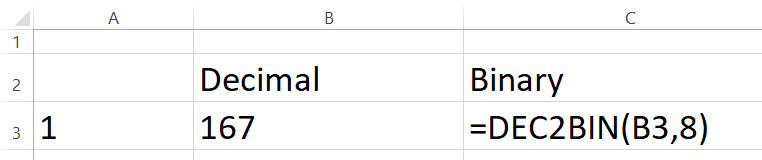
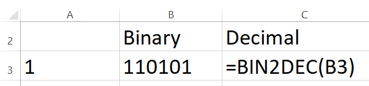
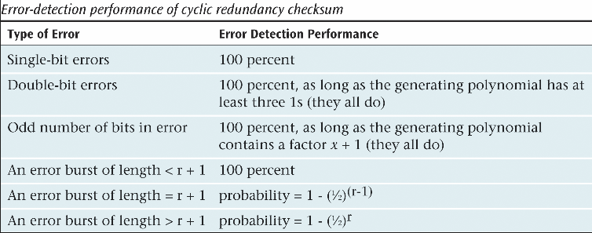
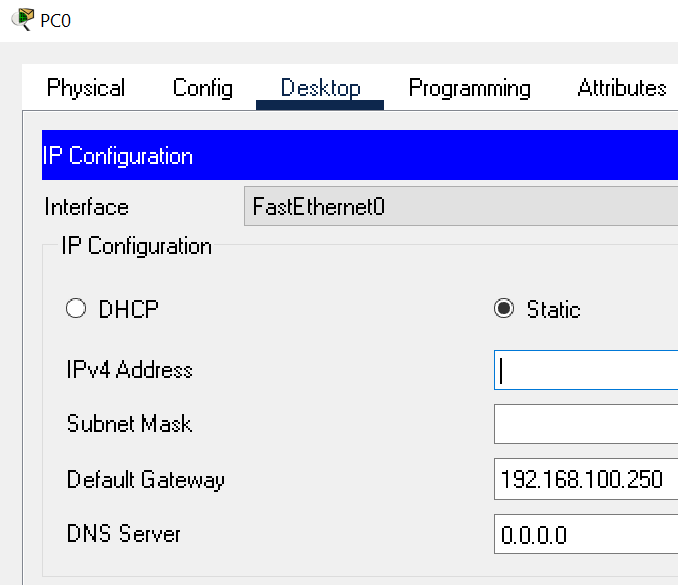

Use the course chatbot and the references provided to answer the following questions and solve the following problems.
IPv4 and IPv6 based networks ensure reliable and efficient data transmission across a wide assortment of global networks. Sometimes it takes a while before a new idea reaches a 'critical mass'. Investigate the history of the development of packet switched networks. Refer to Wikipedia: Packet Switching
(50) 1. List at least one reason that the Bell System (POTS- Plain Old Telephone Service)-based on a circuit switched dedicated network model) showed little interest in the 'packet switching' work of Paul Baran and Donald Davies.
Investigate CRC (Cyclic Redundancy Check) calculations.
(50) 3. Briefly explain how white noise affects a signal:
(25) 4. Will proper shielding of a medium increase or decrease the chance of errors? Briefly explain your reasoning.
(50) 5. What type of errors will cyclic checksum not detect?
(50) 6. In communication systems, what does timeout mean?
You are given the character string 1010010 (50) 7. What bit must be added to support odd parity? Note: For the problems below, there is a spreadsheet, Summative06.xlsx, that you can complete to solve this problem.
1010010
Generate the parity bits and the longitudanal parity bits for even parity for the characters:
The 12-bit string 010111110010 with embedded Hamming code bits (c8, c4, c2, c1) has just arrived. This indicates there is an error. Your job is to determine which bit is in error. Use the following table to solve this problem. Use the Summative06.xlsx spreadsheet to solve this problem.
010111110010
(75) 14. What is and where is the error?
Note-for these Exercises an Excel file with multiple worksheets is provided.
Summative06.xlsx
(50) 15. Create an Excel formula to convert decimal numbers to binary. You are advised to try these problems by hand after reviewing Binary Math. Download the Excel file- Summative06.xlsx, and save to your ' ' folder. Note: the worksheets are protected, but NOT password protected, to prevent inadvertent changes to formulas and data. When the Exercises are complete, you will upload this file to the D2L Summative06XL folder. There are several ways to handle this conversion, an example using the DEC2BIN() function is shown below.

(50) 16. Create an Excel formula to convert binary numbers to decimal. You are advised to try these problems by hand after reviewing Binary Math. Save this file as "Summative06" in your ' ' folder. When complete, you will upload this file to the D2L Summative06XL folder. There are several ways to handle this conversion, an example using the BIN2DEC2() function is shown below.

For Exercises 4 and 5 you can also refer to this Subnet Mask Calculator.
(50). 17. Use Excel to calculate IP addresses using CIDR-Classless Inter-Domain Routing Review Calculating a Subnet Mask. Use the Excel file- Summative06.xlsx, to complete this project. Save this file as "Summative06" in your ' ' folder. When complete, you will upload this file to the D2L Summative06XL folder. There are several ways to handle this conversion, the Excel file demonstrates one method. Please pay special attention to the forumulas and notes provided in the spreadsheet.
(50). 18. Review Calculating a Subnet Mask. Use the Excel file- Summative06.xlsx, to complete this project. Save this file as "Summative06_Projects" in your ' ' folder. When complete, you will upload this file to the D2L Summative06XL folder. There are several ways to handle this conversion, the Excel file demonstrates one method. Once you determine the number of host bits required to handle the Required hosts, the prefix is readily calculable. Please pay special attention to the forumulas and notes provided in the spreadsheet.
Research how to use the nslookup command to find out information about the network. You can work with a partner. Make sure to use your WSU laptop because you have administrator access.
nslookup
Open an elevated Command Prompt (admin). Type in nslookup -type=ns www.winona.edu nslookup displays information on network DNS.
nslookup -type=ns www.winona.edu
(50) 19. Use the Snipping Tool to make a screenshot of the command window. Save the screenshot as "Ex1" in your ' ' folder. You will be combining screenshots from several exercises at the end of this assignment, just as you did in Formative00-PDF File Creation.
Your boss has heard a lot about cyclic redundancy checksum (CRC) but is not convinced that it is much better than simple parity. You quote some of the numbers and probabilities of error detection, but they mean little to him. If you could give a more concrete example of how good cyclic redundancy checksum is, you might win the boss over. Reference the probabilities below. 
(75) 20. Provide your boss with a brief explanation showing the value of using good cyclic redundancy checksums.
For the next two problems download and open this spreadsheet, Summative06.xlsx It contains worksheets setup to get started with the calculations.
If your company transmits a continuous stream at 128,000 bits per second, how much time will pass before CRC lets an error slip through? Assume an error rate of one frame in 10,000 Assume a frame consists of 1,000 bits (50) 21. Briefly explain your reasoning, and show your calculations.
(100) 22. Save a copy of your file 'Summative06.xlsx' in your ' ' folder and... Upload a copy of your completed Summative06.xlsx to the D2L 'Summative06' Assignment folder.
Save a copy of the Packet Tracer files you create for these exercises to your folder.
Open Packet Tracer, create a new lab and try to set an invalid IP Address. When done, perform the tasks below. For background information please refer to the chtbot.

(50) 23. Use the Snipping Tool to make a screenshot of the Desktop Properties IP configuration window showing the error message from step 6. Save the screenshot as "Ex2" in your ' ' folder. You will be combining screenshots from several exercises at the end of this assignment, just as you did in Formative00-PDF File Creation.
Open Packet Tracer and set a IPv6 static address. When done, answer the questions below. For background information please refer to the chatbot.
Open the PC0 Command Prompt window click PC0, click the Desktop tab, click Command Prompt as shown below.
(50) 24. Use the Snipping Tool to make a screenshot of the PC0 command prompt window showing the successful ping request. Save the screenshot as "Ex3" in your ' ' folder. You will be combining screenshots from several exercises at the end of this assignment, just as you did in Formative00-PDF File Creation.
Use a web browser to verify that you have published your website to https://classes.winona.edu/... Check that your name, StarID, email, class, semester, section and all of your answers are correct and visible. From the menu choose File>Print... and using "Microsoft Print to PDF" save a copy of this assignment as a .pdf file in your ' ' folder.
(50) 25. Save your file 'WebPage.pdf' to the ' ' folder.
Create one .pdf (portable document format) file from the screenshots that you have taken by following these steps.
(50) 26. Save your file 'ScreenShots.pdf' in your ' ' folder.
Use PDFill to merge the WebPage.pdf file with the ScreenShots.pdf file, and save it as 'Summative06.pdf' in your ' ' folder.
(50) 27. Upload your file 'Summative06.pdf' to the D2L 'Summative06' Assignment folder.
Use a browser to view your completed and published website at: https://classes.winona.edu/... Ensure that you have linked this assignment on your home page. Note that your screenshots do not have to be completed to perform this step.